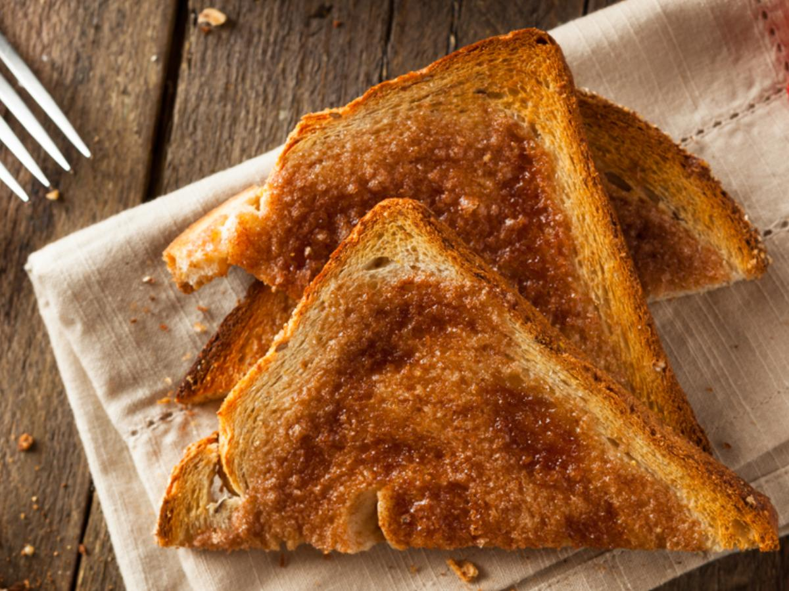

Toast

Description
If you're looking for something light, crispy, and buttery, then
consider making yourself a slice or two of toast. Make sure you have a
toaster around, as well as a microwave.
Ingredients
Steps
- Throw your bread into the toaster, and toast until golden brown
- In the mean time, melt your butter for around 5-10 seconds in the microwave
- Once your bread is toasted, spread the butter on the toast evenly
- Enjoy alongside some hot coffee